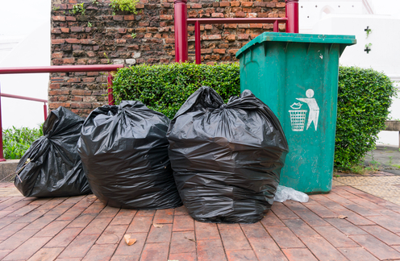
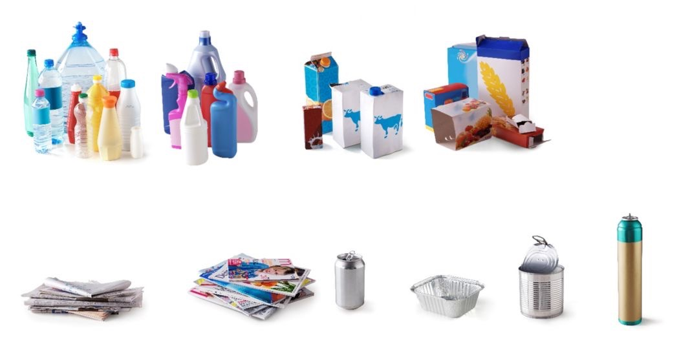

des images expressives
 


→Comment se fait la collecte et le tri des ordures menageres?
→Quelles sont les techniques de traitement et de valorisation des ordures menageres?
♥dans ce sujet il y a beacaup des sources de les ordure mait on va traiter seulememt les ordure menager qui ce deviser en deux partie l'un c'est organiqueest lautre inorganique
La croissance de la population, l'évolution des modes de consommation et l'urbanisation accélérée, demande une utilisation abusive de la matière organique (Substances combustibles dont les molécules sout des chaines carbonées, tel que le pétrole et ses dérivés et les substances organiques d'ongine anumale ou végétale (glucides lipides protides...)) et inorganique (Substances non combustibles. Sable, verre, métaux, sels minéraux, CO₂, H₂O), afin de produire de l'énergie.
♣ Déchets solides tels que les déchets ménagers
♣ Déchets liquides tel que les eaux usées ménagères et industrielles
♣ Déchets gazeux libérés par la combustion de substances organiques énergétiques (charbou, gaz naturel, pétrole et dérivés).
En absence d'une bonne gestion, l'accumulation de ces déchets dans la nature pourrait devenir une source de nuisance pour les différents milieux de l'environnement et la santé de l'Homme
→c'est quoi un déchet ménager?
→Quels sont les types d'ordures?
Les ordures ménagères sont les déchets : Toute substance ou tout objet, ou plus généralement tout bien meuble, dont le détenteur se défait ou dont il a l'intention ou l'obligation de se défaire que les foyers produisent au quotidien et qui sont jetés à la poubelle (par exemple : déchets alimentaires, papiers et ...
→Comment se fait la collecte et le tri des ordures menageres?
→Quelles sont les techniques de traitement et de valorisation des ordures menageres?
le tri:Le tri des déchets et la collecte sélective sont des actions consistant à séparer et récupérer les déchets selon leur nature, à la source, pour éviter les contacts et les souillures. Ceci permet de leur donner une « seconde vie », le plus souvent par le réemploi et le recyclage, évitant ainsi leur simple destruction par incinération ou abandon en décharge et permettant par conséquent de réduire l'empreinte écologique des déchets. Le tri des déchets a un impact positif sur l'environnement, puisque moins de déchets sont jetés et la matière réutilisée n'a pas besoin d'être extraite autre part.
Le tri à domicile implique généralement de séparer les déchets en différentes catégories, telles que le plastique, le papier, le verre, les déchets alimentaires, etc., pour faciliter le recyclage et la gestion des déchets. Chaque catégorie de déchets peut être collectée séparément pour être traitée de manière appropriée, favorisant ainsi des pratiques plus durables et respectueuses de l'environnement
La collectedes ordures menageres se fait par leur assemblage et leur transport a l'aide de camion depuis les quartiers residentiel vers les decharges situees a la peripherique de la ville Mais cette collect et parfois insuffisante ce qui engendre l'apparition des points noirs.
⚫triage au centre de triyoutub//